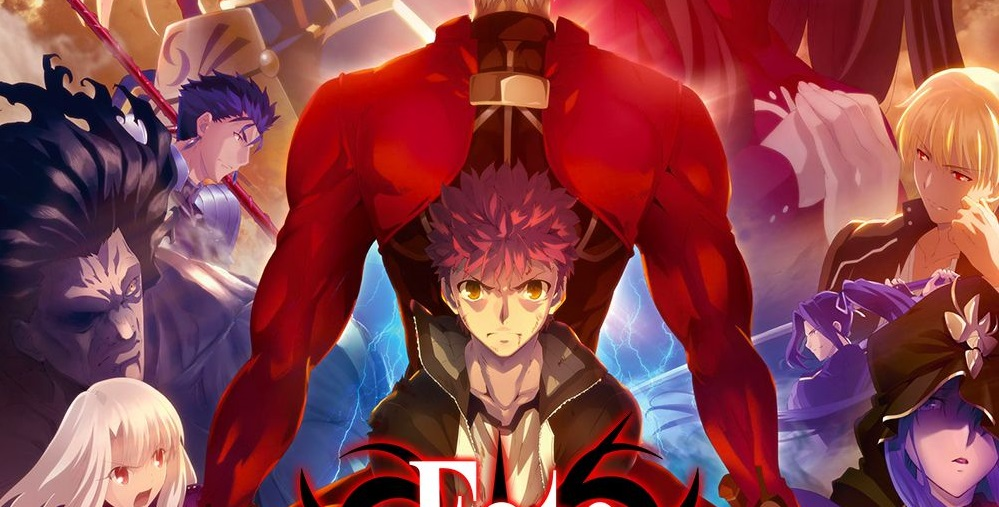
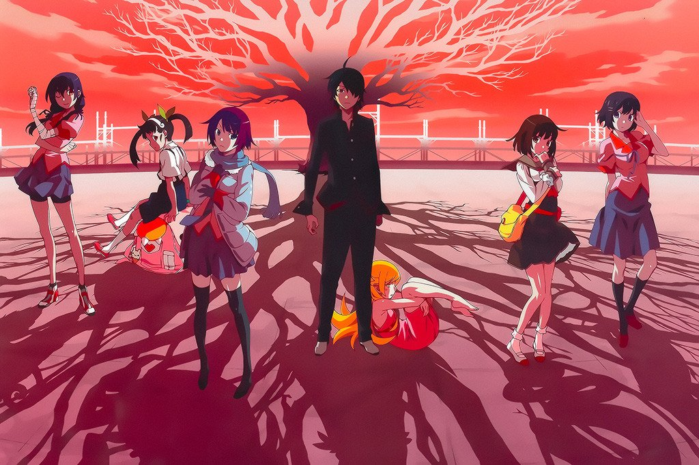
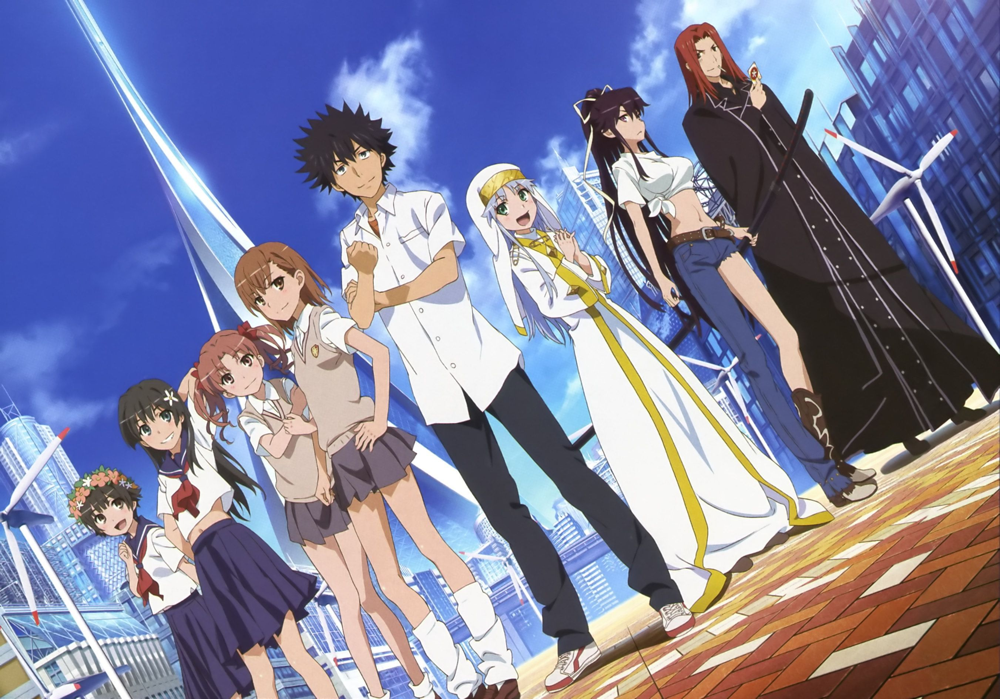

<ion-header>
  <ion-toolbar class="backMenu">
    <ion-buttons slot="start" class="branco">
      <ion-menu-button>
        <ion-icon ios="ios-more" md="md-more"></ion-icon>
      </ion-menu-button>
    </ion-buttons>
    <ion-title class="titulo" (click)="navegar('home')">
      WANIPON
    </ion-title>
  </ion-toolbar>
</ion-header>
<ion-content class="bg">
  <a class="titpag">Animes Ordenados</a><br/>
  <ion-icon name="search" class="icon"></ion-icon><br/><br/>
  <div style="background-color: #252525" (click)="navegar('serieordenada')">
    <a class="titanitemp">Série Fate</a></div><br/>
    <div style="background-color: #252525" (click)="navegar('serieordenada')">
      <a class="titanitemp">Série Jojo</a></div><br/>
  <div style="background-color: #252525" (click)="navegar('serieordenada')">
    <a class="titanitemp">Série Monogatari</a></div><br/>
    <div style="background-color: #252525" (click)="navegar('serieordenada')">
      <a class="titanitemp">Série To Aru</a></div></ion-content>